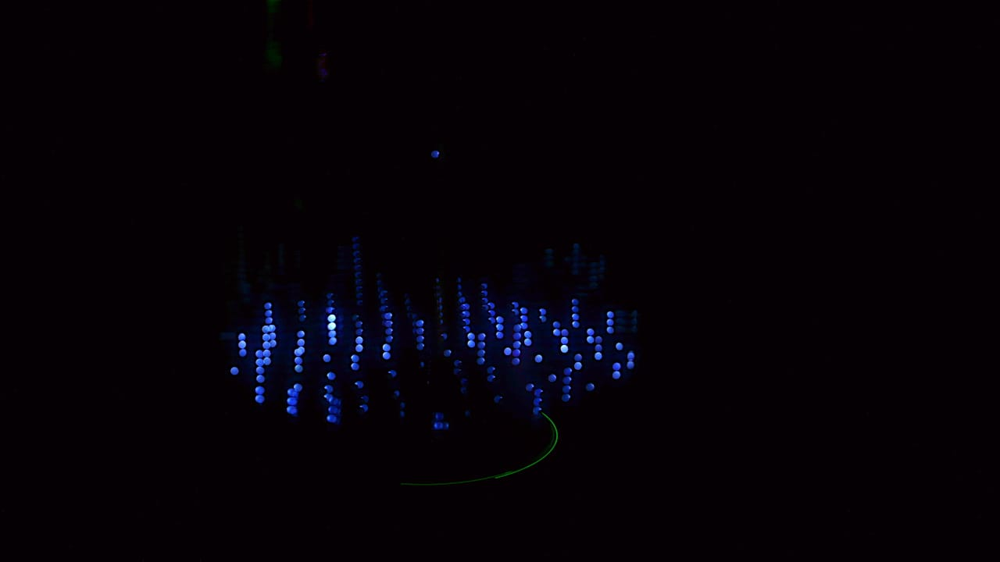
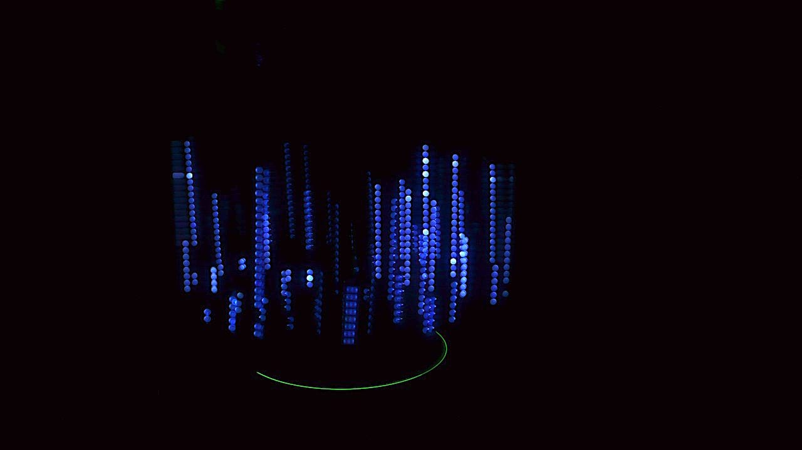
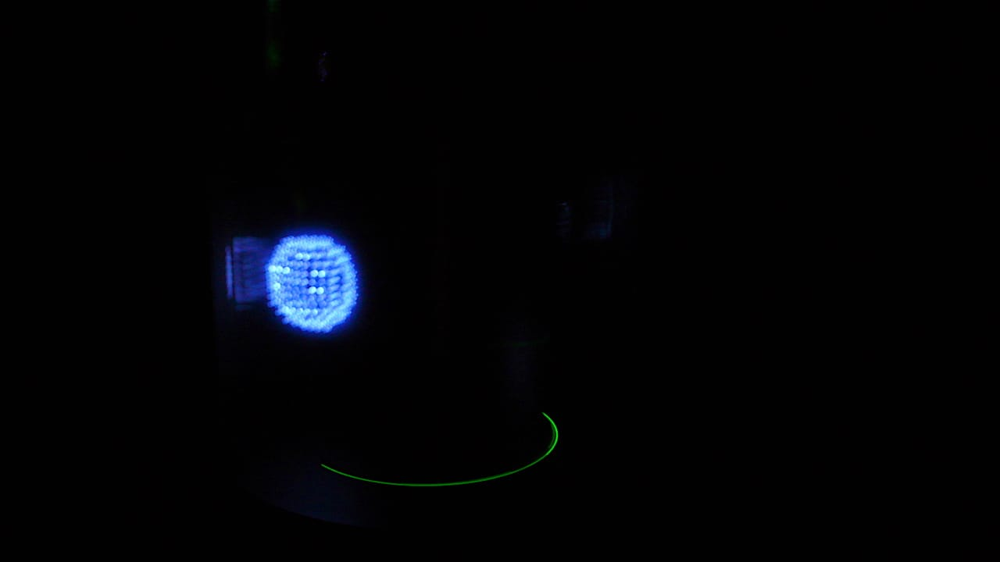
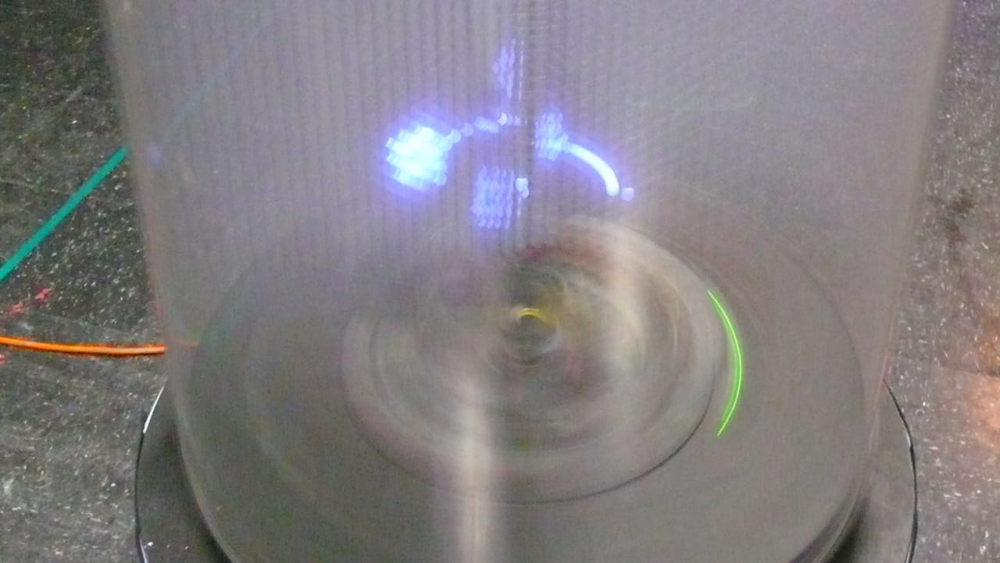
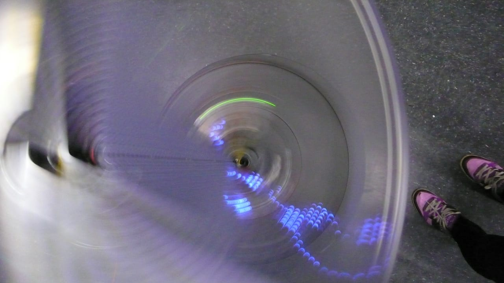
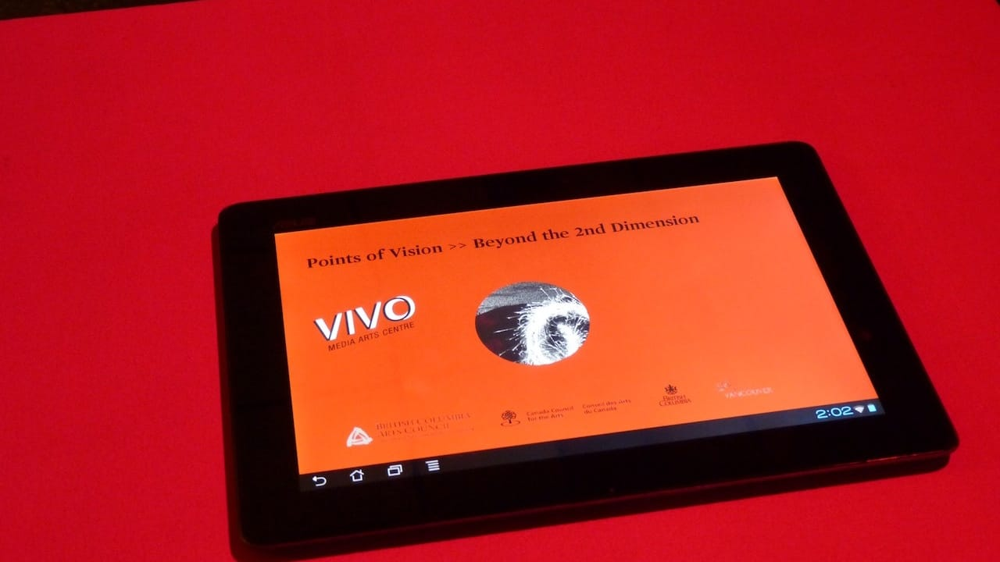

gestural was a software work that I presented during a commission from VIVO Media Arts,
where I was invited to create work for a POV (persistence of vision) machine built by Brady Marks,
that allowed for 3D content to be displayed upon a rapidly spinning grid of LEDs.
My impulse was to explore the way that the audience could conceivably interact with the visual installation from
any and all angles.
The unique propostion of the POV system is that it is viewable 'in the round', so I designed a set of experiences that would
encourage the audience to become embodied in the space while giving them a large degree of agency over the visual information.
My hope was that they would steadiy demistify the technology by gaining cognizance to it's workings, and transcend to a more
experiential realm, which I felt the installation thrived upon.
I ended up crafting three articulate compositions:
* an audio reactive equalizer that responded to sonic interaction in realtime
* a 'Natzke Ribbob' - a simulation of flowing cloth in 3D space, controlled by an Android tablet
* an interactive cube that could change shape and scale, controlled by an Android tablet
I wrote custom software for the Android tablet to respond to and send gestures to a host computer, running Processing,
that interfaced with the BeagleBone computer driving the POV.
The source code is available on my GitHub.
After the initial commission, VIVO gained additional funding from Telus to provide a week-long workshop for Youth to learn how to
program for the POV hardware.
I was invited to co-design and co-teach this workshop along with Brady Marks.
We ended up working with 6 teens to create 6 unique pieces for the installation.





